Everything about the project in simple words: the problem, the Nine Checks, the Components Map, every screen of the app, the AI, and the questions you'll be asked. Read it top to bottom once; then practise the 🎤 lines out loud.
Live app: vc-pulse-lime.vercel.app · Code: github.com/nawazalam4u/vc-pulse · Video: Downloads/VC_Pulse_Demo_Video.mp4 (3:24)
| Time | Do this |
|---|---|
| 0:00-0:15 | Watch the 3-minute video once. Read section 1 (the problem) and memorise the 60-second pitch below. |
| 0:15-0:50 | Sections 2 and 3: the Nine Checks and the Components Map (the professor's focus). Say each 🎤 line out loud. |
| 0:50-1:20 | Section 4: open the live app next to this guide and click through every screen as you read. |
| 1:20-2:00 | Sections 5-8: the score, safety, AI words, then practise the questions in section 9 with a friend. |
The real version: Vikram is raising a Seed round (his first big investment) for Haulr, a software company for trucking and shipping businesses in India. He tracks 50 VCs (venture capitalists: people who invest in startups) in a spreadsheet: name, firm, what they invest in, when he last spoke to them, whether he's waiting for a reply, and his private notes. The sheet tells him who, but not who is worth contacting right now.
| # | Requirement | How VC Pulse does it | Where to show it |
|---|---|---|---|
| 1 | Real information from the last 30 days, not invented | Live Google News, the investors' own blogs, Apple Podcasts; every item keeps its real link and date | "Latest live evidence" feed; evidence in any card |
| 2 | Gemini Flash explains why a signal matters | 💡 "Why it matters for Haulr" on cards and in the drawer, with honest caveats | Any card's yellow box |
| 3 | Useful ranking from evidence, not random | Score 0-100 from what each signal means, fit and timing; maths shown line by line | "Why NN/100" in the drawer |
| 4 | Safe updates: only 4 signal columns change | The database itself blocks the robot from touching notes; proof on every run | "Notes guard" tab → Attack button |
| 5 | Working app + GitHub + Components Map | Live on Vercel, public repo, swimlane map | The link; "How it works" → Downloads |
| Option | Why not |
|---|---|
| Google Alerts + spreadsheet | Still manual, no ranking, nothing updates the table |
| Zapier / no-code | Hard to guarantee "only 4 columns"; row updates can overwrite notes |
| Scrape LinkedIn / X | Against their rules, accounts get banned |
| Just ask the AI to search | Can invent facts and dates; scores change every run; not explainable |
| Ours: real feeds → Gemini judges → code checks and scores → database guards notes | Live, legal, cheap, every claim has a link, same evidence = same score, the key rule enforced by the database |
The Nine Checks are the course's way to decide before building whether an AI tool is worth it. They come in three groups, and each group has a rule for what a "No" means:
| Group | Checks | If any answer is NO… | In simple words |
|---|---|---|---|
| ⚡ Kill switches | 01, 02, 03 | don't build it | Is there even a real, repeating problem with data to work on? |
| 📊 Sizing | 04, 05, 08 | build something smaller | Is it worth building, and can we prove it helps? |
| 🚧 Boundary | 06, 07, 09 | put a human exactly here | Where must a person stay in charge? |


Rows = the actors (who does the work): Vikram, the scheduler (Vercel Cron), our backend (Python on Vercel), the live data sources, the AI (Gemini Flash), and the database (Neon Postgres). Columns = the stages, left to right: Trigger (what starts it) → Input (what we start from) → Context (outside information) → Processing (cleaning) → AI (judgment) → Output (what changes). Dashed arrows show data moving.
| # | Box | What happens | Example: Avaana Capital |
|---|---|---|---|
| 1 | Trigger: Cron / Refresh | Every Monday and Thursday at 7 AM, Vercel's scheduler wakes the app (or Vikram presses Refresh). Only one run at a time. | Thursday 07:00: run starts |
| 2 | Input: Vikram's table | Read the 50 investors: name, firm, thesis, status, last contact. | Anjali Bansal · Avaana Capital · Mumbai · not contacted yet |
| 3 | Context: live data | For each investor, fetch the last 30 days from Google News (person, firm + logistics), their blog feed and podcasts (~400 items). | "Drivn raises Rs 45 crore in seed funding from Avaana" |
| 4 | Processing: filters | Keep only items with a real link and a date within 30 days; remove duplicates; each source keeps its share. If a source fails, keep last run's verdict. | Item kept: real link, dated 22 Sep |
| 5 | AI: Gemini judges | Gemini Flash reads ~10 investors per call and labels each item: is it really them? what does it mean (thesis / deploying / complement / visible / overlap)? how close to logistics? Then writes "why it matters" and flags geography and stage. | firm · invested · 🚀 deploying · fit 2/3 · India match · seed match |
| 6 | Code verifies AI | Our code double-checks Gemini: the text must name the investor; a deal can't be a "thesis"; a stake sale isn't deploying; no company names from memory; one event counts once. | Avaana named in the headline ✓ |
| 7 | Score + action (code) | Plain arithmetic: meaning × topic fit × who acted × freshness, plus fit and timing → a score and an action. | 75 → WARM (see section 5) |
| 8 | Output: update 4 columns | Write only last_signal_date, signal_summary, follow_up_score, recommended_action, using the robot login, which cannot touch notes. | Her notes "Ask Meera for an intro" unchanged |
| 9 | Output: dashboard | Vikram sees the board, clicks the evidence, asks for a draft. | Card shows 75, the reason and the evidence |
| 10 | Human gate | Vikram decides, edits and sends the email himself (Gemini drafts on request). | He chooses whether to write this week |
The numbered red boxes match the video. Five tabs at the top: This week · Pipeline table · Notes guard · Run history · How it works. Screenshots are from 15 Oct, 3:40 AM; scores and lanes change a little after every run (new news arrives, and Gemini reads headlines slightly differently each time), so your screen will show different names and numbers. The layout and meaning stay the same.
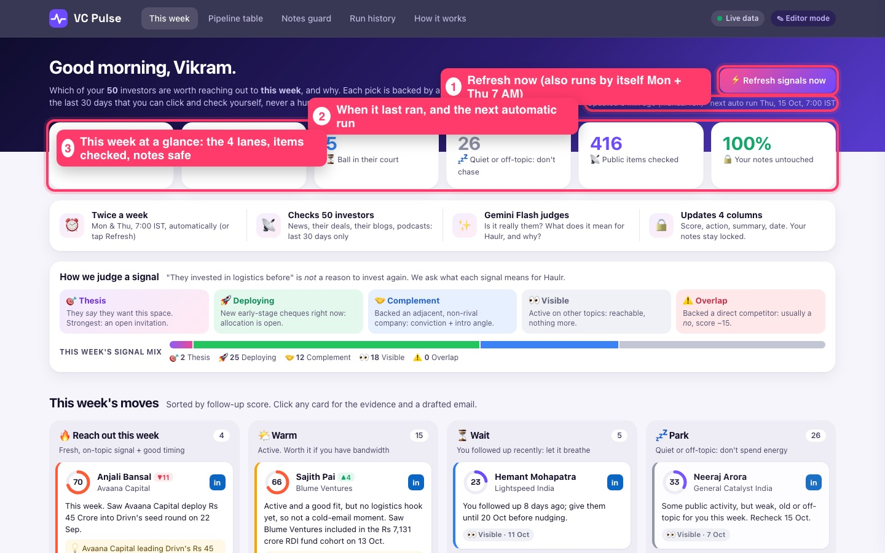
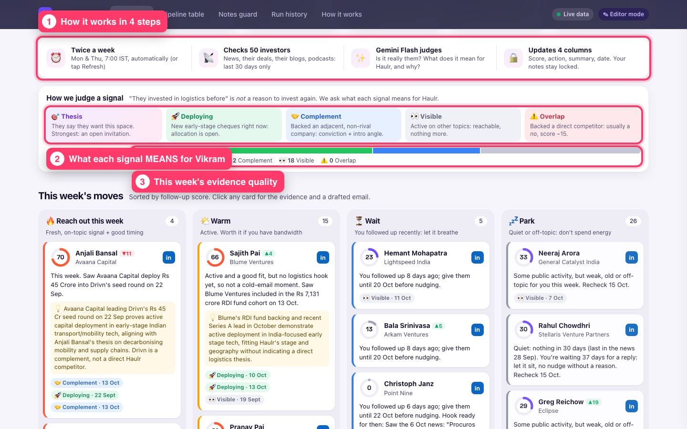
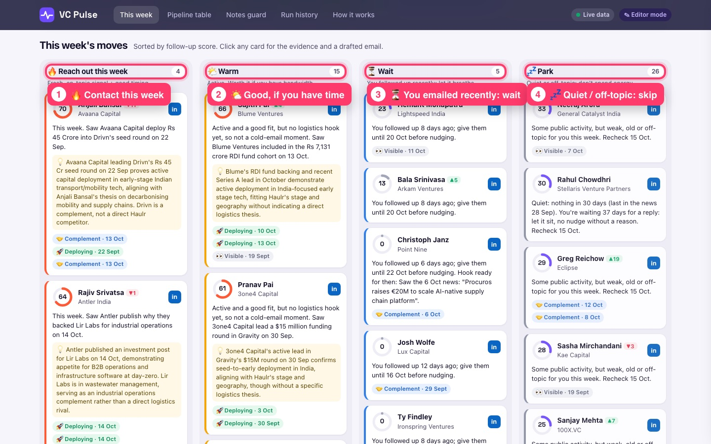
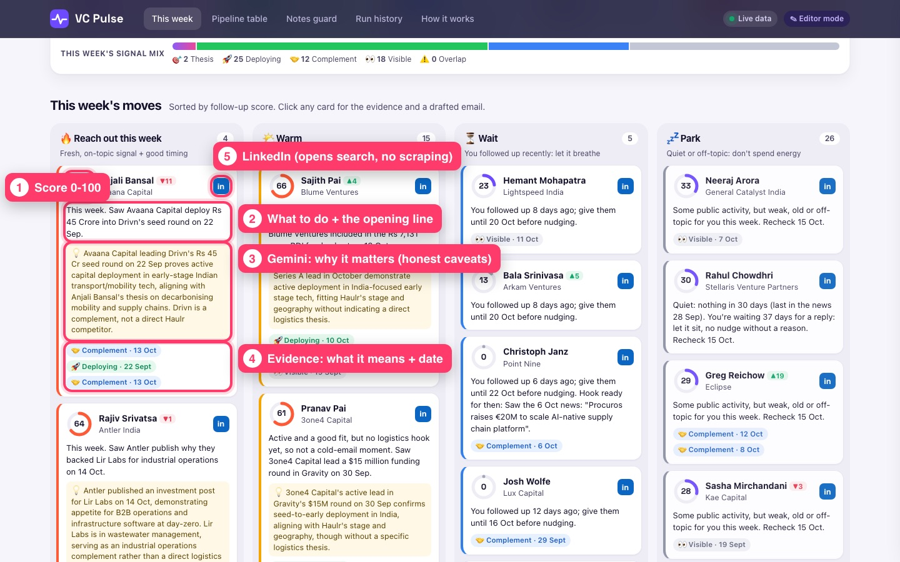
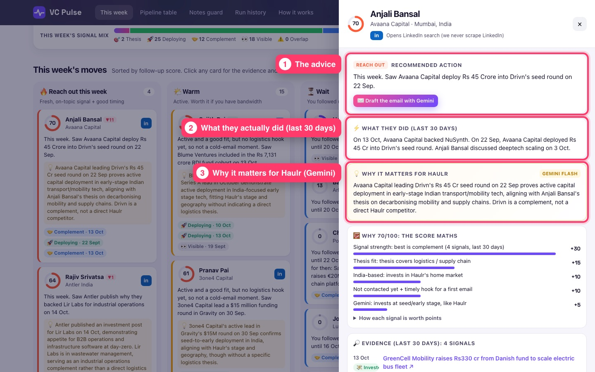
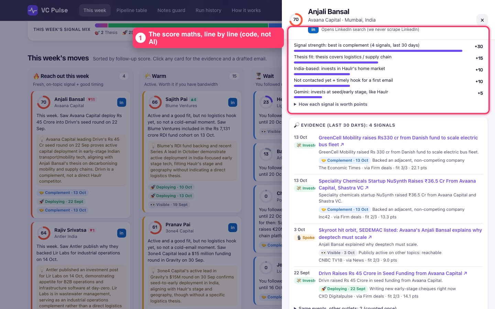
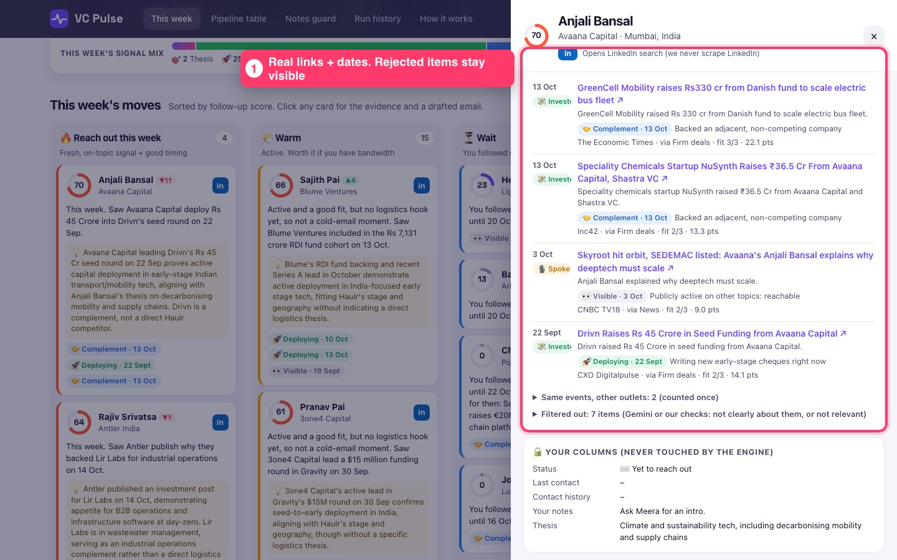
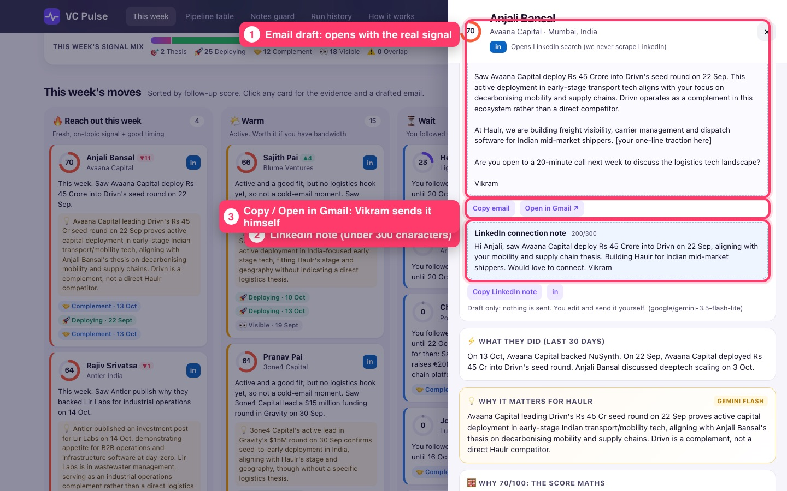
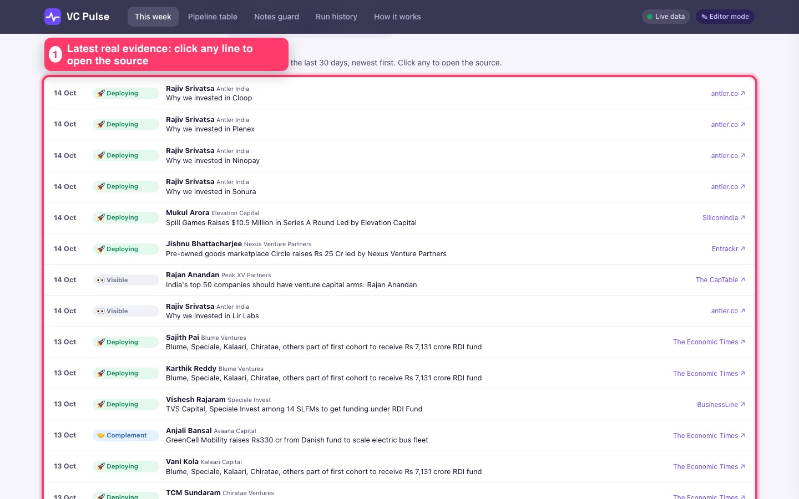
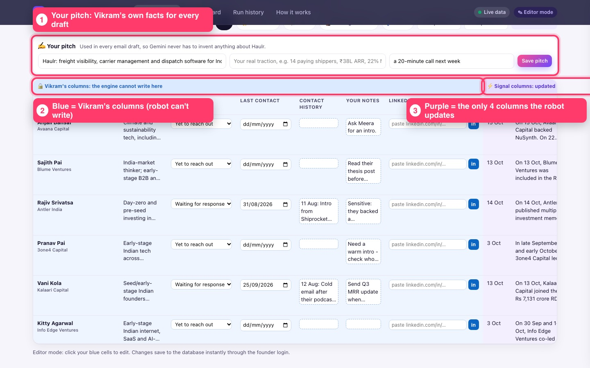
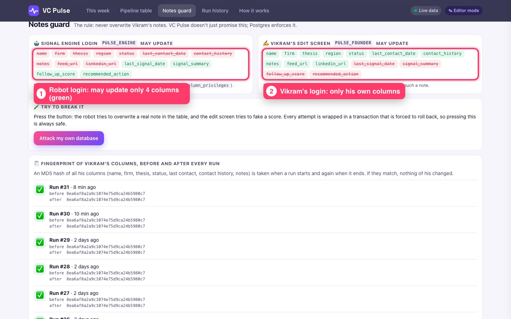
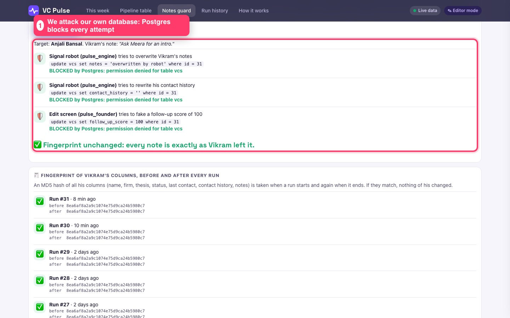
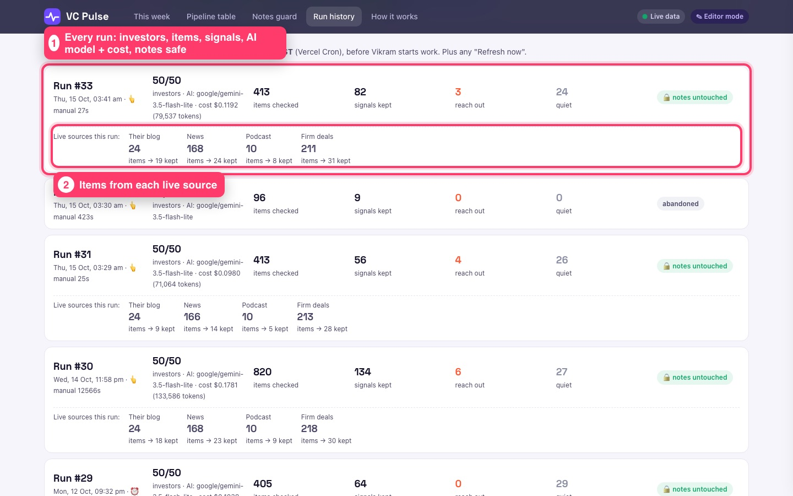
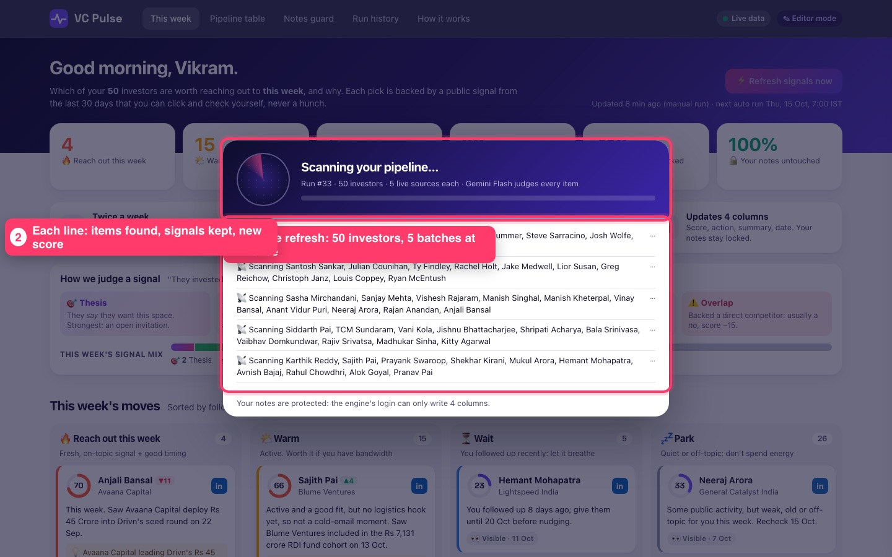
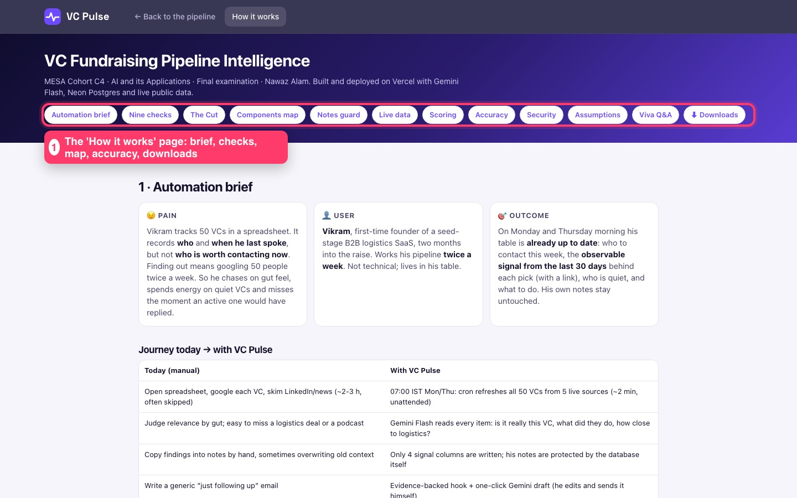
Editor mode (top right, via Vikram's private link) unlocks editing his columns, saving his pitch, adding investors and refreshing any time. Without it the site is read-only and refresh has a 10-minute cool-down.
"They invested in logistics before" is not a strong reason: a fund rarely backs a competitor of a company it already owns. So Gemini labels the meaning, and that decides the weight:
| Meaning | Weight | Simple example |
|---|---|---|
| 🎯 Thesis: they say they want this space | 42 | A partner's post: "why we're excited about freight software" |
| 🚀 Deploying: writing new early cheques now | 34 | "Peak XV raises Surge seed cheques to $5M" |
| 🤝 Complement: backed an adjacent, non-rival company | 26 | Backed an EV fleet company: same world, not a competitor |
| 👀 Visible: active on other topics | 10 | A TV interview about AI: reachable, nothing more |
| ⚠️ Overlap: backed a direct competitor | 0 and −15 | Backed another freight-visibility startup: usually a no |
Points = weight × topic fit (logistics 1.0, adjacent 0.6, general 0.3) × who acted (the person 1.0, the firm 0.85) × freshness (full for 7 days, down to 40% at day 30). Signal strength = best + 40% of 2nd + 20% of 3rd (max 70). Then fit: thesis +3/+8/+15, India-based +10, seed +5, US-only −15, later-stage −8; and timing: emailed under 7 days ago −30, 7-13 days −10, fresh signal + good moment +10.
Emailed under 14 days ago → WAIT · score ≥ 55 → REACH OUT (new investor, needs a logistics reason) or NUDGE (already pitched, any timely reason) · 35-54 → WARM · weak → LOW · nothing in 30 days → PARK (with how long they've been quiet).
| Best signals | 🚀 Avaana invested ₹36.5 Cr in NuSynth (13 Oct, fit 2) = 23.1 pts; 🤝 a mobility/fleet item = 22.1; 🚀 Drivn ₹45 Cr seed (22 Sep) = 14.1 |
| Strength | 23.1 + 0.4×22.1 + 0.2×14.1 ≈ 35 |
| Fit and timing | thesis covers logistics/supply chain +15 · India-based +10 · seed stage +5 · not contacted + timely +10 |
| Total | 75, but the strongest reason is a chemicals deal, not logistics → a cold email needs an on-topic hook → WARM: "Active and a good fit, but no logistics hook yet." |
pulse_engine) may update only the 4 signal columns; Vikram's screen (pulse_founder) only his columns, including his saved LinkedIn link. A fingerprint (MD5) of his columns is taken before and after every run, and they always match.| Front end / back end | What you see in the browser (HTML, CSS, JavaScript) / the hidden code that does the work (Python on Vercel). |
| Vercel | Puts the website online; runs our Python code only when needed ("serverless"); its Cron is the twice-a-week alarm clock. |
| GitHub | Stores the code and its history; public = portfolio. Every update automatically redeploys the site. |
| Neon (Postgres) | The cloud database: Vikram's table, the evidence, the run log. It enforces who may write which column. (Same engine as Supabase; the brief's "Supabase table" works the same.) |
| API / API key | A way for programs to ask other programs for things / its secret password (kept in Vercel, never on GitHub). |
| RSS feed | A public list of a website's newest articles, made for apps to read (our live news source). |
| LLM · Gemini Flash | An AI that reads and writes language; Flash is Google's fast, cheap model family (exam rule). We use 3.5 Flash-Lite, with 3.7/3.8 Flash as backups. |
| OpenRouter | A gateway that forwards our AI requests; the course key; we force Google models on Google servers. |
| Prompt | The AI's job description and rules ("use only these headlines; never invent facts"). |
| Structured output (JSON) | We force Gemini to answer in fixed boxes (who, what kind, meaning, fit), so code can read it reliably. |
| Temperature | The creativity dial: low (0.1) for judging, higher (0.6) for email drafts. |
| Hallucination / grounding | AI saying something untrue / making it answer only from real sources. Ours only labels items we fetched; code removes any company name not in the evidence. |
| Token · reasoning tokens | Pieces of words the AI reads and writes (that's what you pay for) · tokens it spends "thinking" (we set thinking to minimal: cheaper and just as accurate). |
| Precision · recall | Of what it flagged, how much was right (100%) · of what was really there, how much it found (85-89%). |
| Least privilege | Every part gets only the permissions it needs (the robot can write 4 columns, nothing else). |
| Hash / fingerprint | A short code computed from data; if anything changes, it changes. Used to prove notes were untouched. |
| Pipeline vs agent | We built a fixed pipeline (predictable, testable), not an autonomous AI agent (unpredictable, could touch the notes). |
| App | Link | Key tech |
|---|---|---|
| VC Pulse (this final) | vc-pulse-lime.vercel.app | Vercel + Cron, Python, Neon, Gemini via OpenRouter, live RSS |
| Aangan Desk (Case 03, voice receptionist) | aangan-desk.vercel.app | Vaani voice AI, Neon, Gemini, Telegram, HubSpot, Cal.com |
| Kargo hiring (Case 02) | kargo-hiring-eight.vercel.app | Supabase, Gemini, CV scoring, Resend email |
| TripLock (group trip planner) | triplock-zeta.vercel.app | Vercel, Supabase |
| Skinstinct bot (Case 01) · Tonight's Pick (movie matchmaker) | GitHub (nawazalam4u) | Telegram bot · Supabase (paused to free a slot) |
Common pattern across all of them: a real user problem → Nine Checks → Components Map → a Vercel app with a database, an AI step boxed in by code rules, and a human gate.
If the Wi-Fi is slow: the dashboard still shows the last run's data; play the video instead. Don't press Refresh more than once; it takes ~40 seconds.
What problem did you solve?
A founder with 50 investors can't tell who to contact this week. VC Pulse reads live public signals twice a week, explains what they mean for his company, ranks investors, and updates his table, without touching his notes.
What are the Nine Checks and why do they matter?
A test of whether an AI tool deserves to be built: 3 kill switches (any no → don't build), 3 sizing checks (any no → build smaller), 3 boundary checks (any no → put a human there). Ours: all kill switches and sizing are yes; the boundaries put Vikram in charge of sending and judging.
Which check was hardest?
03, input available: LinkedIn has the richest data but scraping breaks its rules, so we chose official public feeds. And 06/07: we decided the AI never sends emails.
How do you measure impact (check 05)?
Time saved per session, % of emails with a real reason, reply rates, plus measured AI accuracy (100% precision) and cost per run logged.
What's "The Cut"?
What we deliberately didn't automate: sending emails, writing his notes, scraping LinkedIn, and letting AI set the score.
Walk me through the map.
Trigger (cron or Refresh) → Input (Vikram's 50 investors) → Context (30 days of news, blogs, podcasts) → Processing (filters) → AI (Gemini judges meaning and explains why) → code checks and scores → Output (only 4 columns written, dashboard) → Vikram decides and sends.
Where exactly is the AI, and where is the human?
AI: the Gemini box judging each item and writing the "why" and drafts. Human: the gate at the end: Vikram reads, decides, sends; and only he edits his columns.
Why does code check the AI after Gemini?
AI can be wrong; code checks (name must appear, no memory facts, a deal isn't a thesis, sales aren't investing) keep precision at 100%.
What does "twice a week" look like in the map?
The Scheduler row: Vercel Cron, Monday and Thursday 07:00 IST, runs all 50 investors in about 30 seconds.
"They invested in logistics before, so they're a strong lead." Agree?
No. A direct competitor makes them less likely (overlap, −15); an adjacent deal is only medium (complement). Strong signals: they say they want the space (thesis) or are writing new early cheques now (deploying), in India, at seed stage.
Why are most investors WARM, not REACH OUT?
Because a cold email needs a logistics reason. Many funds are active in other sectors: good fit, but no honest hook this week.
How do you stop the AI making things up?
It only labels real items we fetched (with links and dates), answers in fixed JSON, and code removes anything not supported by the evidence. Drafts leave a placeholder instead of inventing traction.
Why Gemini 3.5 Flash-Lite?
We tested three Flash models on 57 hand-checked items; Flash-Lite was cheapest and most accurate (100% precision). The exam requires Gemini Flash; it runs through the course's OpenRouter key.
How do you prove notes are never overwritten?
The database login the robot uses has no permission to write them; the Attack button shows "permission denied"; fingerprints match on every run.
What if something fails mid-run?
Failed investors keep last verdict, the run is marked partial, and a run left hanging is auto-closed after 6 minutes.
Why Neon if the brief says Supabase?
Both are Postgres; the same SQL works on either. Supabase's free slots were used by earlier projects.
How does LinkedIn work?
We never scrape it. The "in" button opens LinkedIn search, or a profile link Vikram saved in his own protected column.
What would you build next?
Gmail integration (with consent) to log replies and learn which signals predict replies; logins for many founders; reading full articles, not just headlines.
What did you learn?
Use AI for judgment on real evidence, box it in with rules and code checks, measure it, and let the database enforce the rules that matter most.